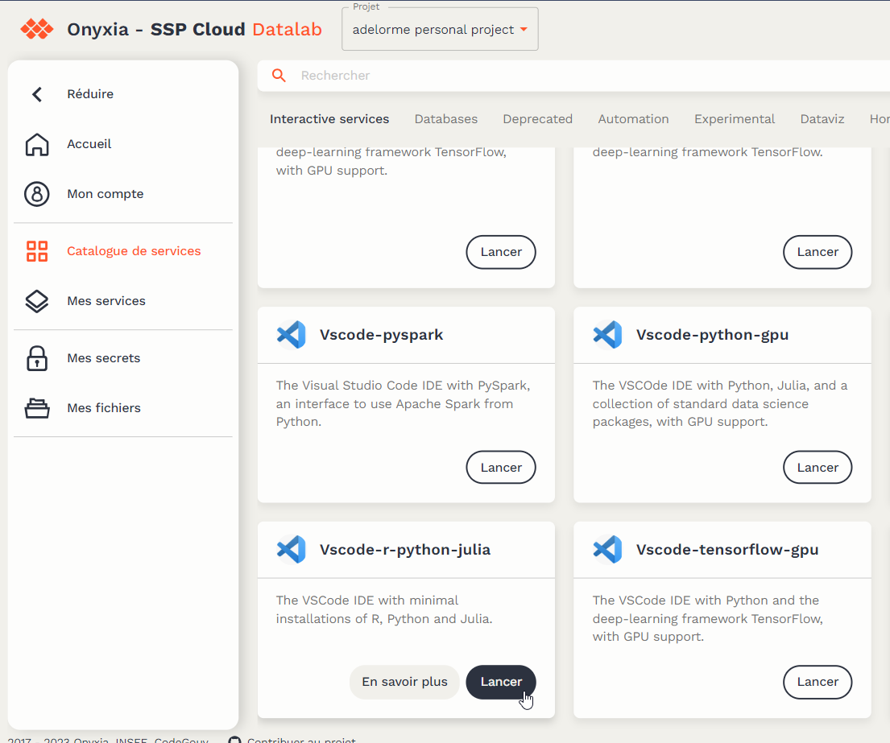

install.packages(c("tidyverse", "arrow", "shiny", "shinyWidgets", "bs4Dash", "shinymanager", "leaflet", "config", "DT", "echarts4r", "geojsonio", "glue", "golem", "htmlwidgets", "janitor", "sf", "testthat", "geojsonio", "dockerfiler", "attachment", "rsconnect", "spelling"))4 Développement application shiny
L’application de suivi de collecte est une application shiny que nous allons déployer dans le datalab.
Pour cela nous préconisons quelques principes :
- utiliser le package Golem développé par Thinkr. Il encapsule l’application shiny dans un package avec un objectif de mise en production (inclusion de tout ce qui est utile au déploiement).
- utiliser le datalab pour développer l’application.
- stocker les programmes dans GitHub.
Cette partie de la documentation explique la mise en place de tout ce qu’il faut pour développer l’application. Dans les prochaines parties nous développerons le squelette du site de suivi, puis nous le peuplerons avec des box.
4.1 Création d’un repo Github
Ce repo est le lieu de stockage des programmes du site de suivi de collecte. La création de repo est réalisé par l’un des membres de l’équipe avec son compte github (voir Prérequis) :
- Se connecter à Github
- Créer un nouveau repository
- saisir le nom du repo
- laisser tout le reste tel que proposé et cliquer sur Create repository
Vous arrivez sur la page d’accueil du repo. Vous pouvez ici ajouter vos collègues dans la rubrique Add collaborators to this repository.
Avant de passer à la création du service Rstudio dans le datalab, copier l’adresse du repo qui est disponible dans le Quick setup : dans l’exemple ce sera https://github.com/anaelDelorme/suivi_collecte_esea.git
4.2 Création d’un service Rstudio dans le datalab
Vous pourriez tout à fait travailler sur Cerise ou sur votre poste local. Nous vous proposons de travailler sur le datalab directement : vous avez accès à une configuration proche de celle du déploiement de votre site. Et nous vous conseillons d’utiliser un VSCode plutôt qu’un Rstudio.
Après vous être connecté au datalab, vous aller dans Mes services.
Puis vous cliquer sur Nouveau service :
Vous choisissez un Vscode-r-python-julia. Là nous utiliserons Rstudio en cliquant sur Lancer :

Avant de lancer le service nous conseillons de le configurer en ouvrant la boite Configuration Vscode, puis d’aller dans l’onglet Git. Il faut recopier dans Repository le lien du repo copié précédemment et vérifier les identifiants et token github :

Puis clikquer sur Lancer. Après quelques instants le service Vscode sera disponible et vous pourrez vous y connectant avec le mot de passe indiqué à l’écran.
Si tout s’est bien passé, vous arrivez dans un Vscode classique avec un répertoire vide correspondant au répertoire du Github.
4.3 Installation des packages utiles
La création d’un site de suivi de collecte nécessite l’installation de packages. Pour cela, ouvrez un terminal VScode :

Tapez r pour indiquer que vous allez saisir une commande R. Puis lancer la ligne de code suivante.
4.4 Création du projet Golem
Allez dans le répertoire créé dans votre Rstudio, créer un répertoire suiviCollecte, puis créer un fichier init.R et indiquez la ligne de code suivante :
golem::create_golem(path = "../suiviCollecte", check_name = TRUE)Lancez la commande.
Vous obtenez un répertoire suiviCollecte dans votre répertoire suivi_collecte_XXX qui sera votre répertoire de travail pour créer votre application shiny. Si le répertoire suiviCollecte n’est pas créé comme sous-répertoire de suivi_collecte_XXX, déplacer le.
4.5 Paramétrage Golem de votre package
Le principe de Golem est d’encapsuler l’application shiny dans un package. Il y a quelques étapes à suivre afin de commencer à développer l’application shiny. Dans le répertoire Dev, ouvrez le fichier 01_start puis modifier et lancer les différentes commandes:
- Description du package :
golem::fill_desc(
pkg_name = "suiviCollecte", # The Name of the package containing the App
pkg_title = "Suivi de la collecte ESEA", # The Title of the package containing the App
pkg_description = "Site web de suivi de la collecte de l'enquête ESEA", # The Description of the package containing the App
author_first_name = "Anaël", # Your First Name
author_last_name = "Delorme", # Your Last Name
author_email = "anael.delorme@agriculture.gouv.Fr", # Your Email
repo_url = "https://github.com/anaelDelorme/suivi_collecte_esea", # The URL of the GitHub Repo (optional),
pkg_version = "0.0.0.9000" # The Version of the package containing the App
)- Lancement des commandes utiles :
#################### A LANCER
## Set {golem} options ----
golem::set_golem_options()
## Install the required dev dependencies ----
golem::install_dev_deps()
## Create Common Files ----
## See ?usethis for more information
usethis::use_mit_license("Golem User") # You can set another license here
usethis::use_readme_rmd(open = FALSE)
devtools::build_readme()
# Note that `contact` is required since usethis version 2.1.5
# If your {usethis} version is older, you can remove that param
usethis::use_code_of_conduct(contact = "Golem User")
usethis::use_lifecycle_badge("Experimental")
usethis::use_news_md(open = FALSE)
## Init Testing Infrastructure ----
## Create a template for tests
golem::use_recommended_tests()
## Favicon ----
# If you want to change the favicon (default is golem's one)
golem::use_favicon() # path = "path/to/ico". Can be an online file.
# golem::remove_favicon() # Uncomment to remove the default favicon
## Add helper functions ----
golem::use_utils_ui(with_test = TRUE)
golem::use_utils_server(with_test = TRUE)
################## NE PAS LANCER
## Use git ----
usethis::use_git()Dans le répertoire Dev, ouvrez le fichier 02_start puis lancer les différentes commandes:
### A Lancer :
attachment::att_amend_desc()
## Creates fct_* and utils_*
golem::add_fct("helpers", with_test = TRUE)
golem::add_utils("helpers", with_test = TRUE)
## Vignette ----
usethis::use_vignette("suiviCollecte")
devtools::build_vignettes()
############## Ne pas lancer le reste4.6 Commit et push dans github
Vous êtes prêts à lancer le développement de votre application shiny. Nous vous recommandons de faire un commit / push de votre code dans Github. Pour cela il faut :
- aller dans *Source control” :

- là il faut indiquer que tous les fichiers doivent être dans le commit et envoyés dans Github. En langague git, c’est stage all changes. Dans VScode c’est le bouton + à droite de Changes.
- indiquer un libellé de commit puis à droite du Commit, choisir Commit & Push.
- vérifiez dans Github que le code a bien été envoyé.